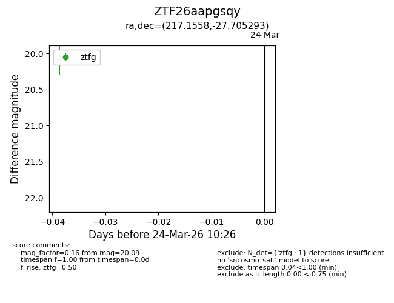
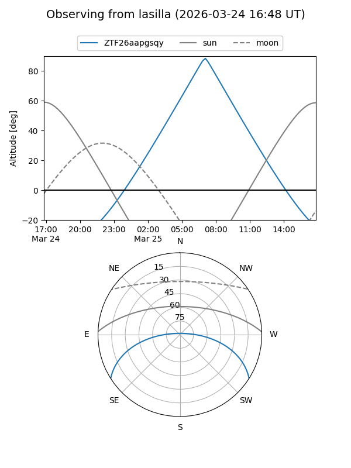
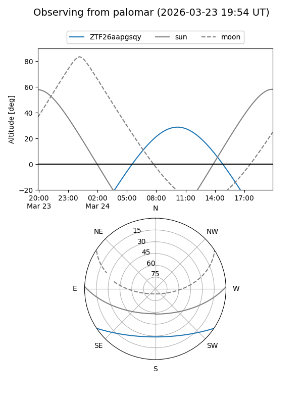

ZTF26aapgsqy
Target ZTF26aapgsqy at 2026-03-24 10:29
Aliases and brokers:
FINK: link
Lasair: link
ALeRCE: link
alt names
ZTF26aapgsqy (ztf,fink_ztf)
Coordinates:
equatorial (ra, dec) = 217.1558,-27.70529
equatorial (HMS+DMS) = 14:28:37.40,-27:42:19.05
galactic (l, b) = (327.9174,+30.40869)
Flags:
Photometry:
last ztfg=20.09
1 ztfg detections
Lightcurve

Visibility


Additional plots